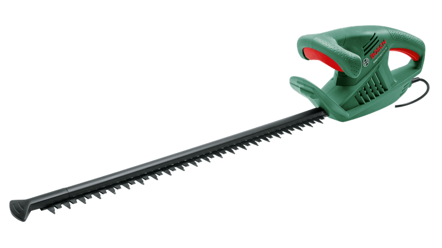
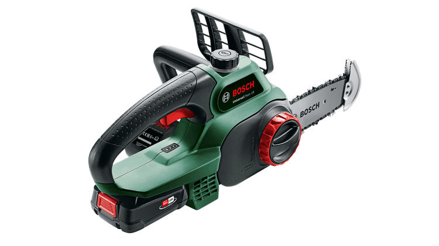
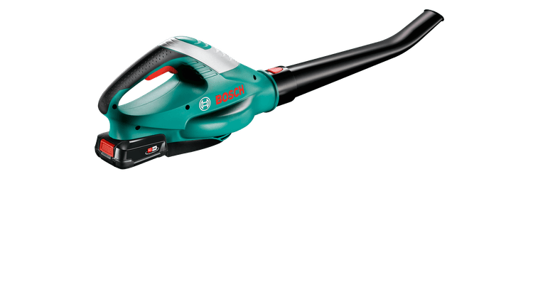

|  |
Bosch Easy HedgeCut 55 (0600847C02)
- High-speed 420 W motor delivers powerful, quick, clean-cuts
- Balanced weight with ergonomic handling for comfort in any working position
- Lightweight 2.6 kg with compact design for easy handling and control
- 45-cm blade length and 16-mm tooth spacing design for light trimming work
- Perfect for trimming small hedges
|
|  |
Universal Chain 18 (0100447502)
- Exceptionally light weight at only 3 kg including battery
- Streamlined Bosch SDS-system enables tool-free tensioning and chain replacement
- Tip Protector with grip-teeth for clean undercuts with minimal branch damage
- Switch between delicate pruning, waste management, and cutting firewood easily
|
|  |
ALB 18 LI (0645443342)
- 18 V Li-ion battery
- for cordless freedom with up to 17 minutes runtime
- Lightweight (1.8 kg) and ergonomic design
- for comfortable handling
- Up to 210 km/h airspeed
- for fast and efficient work
- Easy clearing of leaves and garden foliage
- from patio and garden areas
- POWER FOR ALL
- One battery for an entire Home & Garden tools system
- Syneon Technology
- regulates energy use for optimal efficiency and longer runtime
|